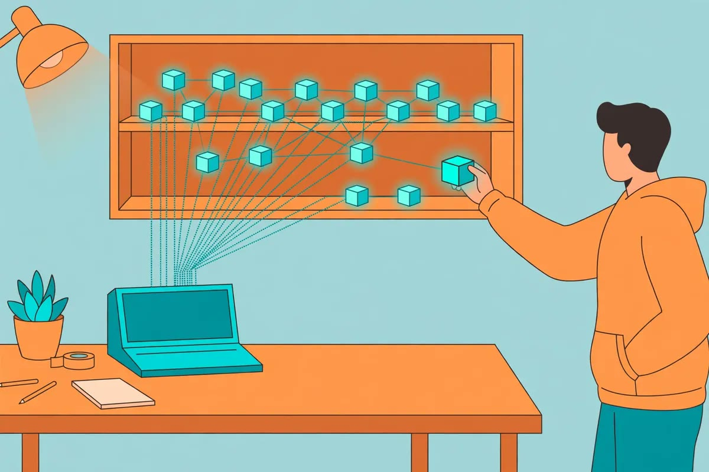

wswin 首页 / AI 资讯
AI 资讯
开源项目 free-claude-code 的做法很取巧：它不在你电脑上换一个新工具，而是把 Claude Code 发出的请求截下来，翻译成各家模型服务商能听懂的格式，再把回答翻回去。项目页列出 61 家服务商，包括 NVIDIA NIM、OpenRouter、Groq、Together AI、GitHub Copilot 和本地 Ollama，项目页自称每月能汇总超过 13 亿 tokens 的免费额度。
用法是：本机跑一个代理服务，启动器把 Claude Code、Codex 等 11 个编程工具指向这个代理，在模型选择器里挑一家额度还够用的模型。一次请求失败后，它会自动换下一家重试；项目页还提供省 tokens 开关，自称最多能省 90%。
免费背后有三处成本要先算清。第一，各家免费额度的规则随时会变，今天能用不代表下周还能用。第二，一次失败重试可能在多家服务商那里都消耗额度。第三，你的代码会经过代理发给第三方服务商，免费档的数据处理条款各家不同，敏感项目不适合这么跑。
普通人怎么用：先拿一个不含密钥、不连生产库的练手项目试，挑一家额度稳定的服务商跑通一轮完整任务，再决定要不要长期用。公司代码、含客户数据的项目，别走这类免费代理。免费额度是用来练手和做小项目的，不是用来扛正式交付的。